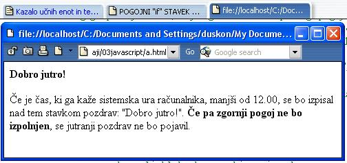

The Child is father of the Man (W. Wordsworth)
 Slika 1 in 2: "if" ukaz ali stavek - koda in videz spletne strani 1. Izdelaj spletno stran, ki bo izgledala tako, kot kažeta sliki 1 in 2. Datoteko poimenuj "14apriimek.html". Ne pozabi na konènico ".html". POZOR: Najprej NATANÈNO izdelaj vajo v tej uèni enoti in jo pokaži profesorju, nato zapiši odgovore na spodnja vprašanja. 2. V kodo primera v tej uèni enoti vstavi spodaj navedene komentarje na ustrezna mesta, ki jih ti komentarji pojasnjujejo. //Telo stavka "if". //Konec bloka ukazov v telesu stavka "if". //Postavimo pogoj v stavku "if". //Zaèetek bloka ukazov v telesu stavka "if". //Razlaga delovanja skripta. Ta razlaga se nahaja v HTML kodi spletne strani. 3. Kodo primera v tej uèni enoti spremeni tako, da se bo na strani ob zagonu izpisal pozdrav "Dober veèer", èe bo ura veè kot 19.00 (sedem zveèer). 1. Vprašanja za usmerjanje pozornosti in usvajanje novih besed: 1. Kaj je naloga pogojnih stavkov? 2. Kdaj uporabimo "if" stavek? 3. Kdaj uporabimo "if...else" stavek? 4. Kdaj uporabimo "if...else if...else" stavek? 5. Kdaj uporabimo programsko stikalo? 6. Kaj je sintaksa? 2. Zapiši od ene do pet kljuènih besed, ki povzemajo vsebino te uène enote. 3. Vprašanja za razmislek in povezovanje z lastno izkušnjo: 1. Zapiši spremenljivki, ki smo ju deklarirali v primeru na slikah 1 in 2. 2. Zapiši dve novi funkciji, ki smo ju uporabili v primeru na slikah 1 in 2. 3. Zapiši argument stavka "if" v primeru na slikah 1 in 2. 4. Koliko znaša vrednost argumenta stavka "if" v primeru, ko je tekoèi èas sistema 19:35? 5. Ali se bo stavek "Dobro jutro! v primeru iz (prejšnje) toèke izpisal na zaslonu? 4. Domaèa naloga: 1. V zvezek prepiši misel, ki je zapisana na zaèetku uène enote z rdeèimi èrkami. Zabeleži nekaj lastnih misli, ki se ti utrnejo ob razmišljanju o njej. 2. Odgovori na vprašanja, na katere nisi uspel/a odgovoriti v šoli. 5. DODATNO DELO: 1. Izdelaj spletno stran, ki bo izgledala tako, kot kažeta sliki 1 in 2. Spremeni kodo tako, da se bo na zaslonu pojavil zapis "Dober veèer!", èe bo tekoèi èas znašal veè kot 18:00. Datoteko poimenuj "14bpriimek.html". Ne pozabi na konènico ".html". |